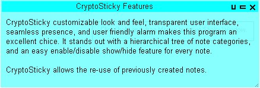
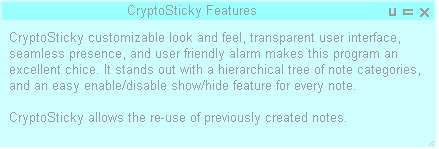
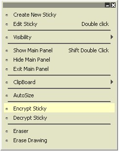
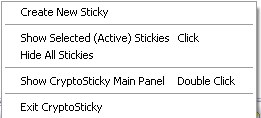

|
 The Sticky
The Sticky
CryptoSticky
has
been
designed to be unobtrusive, easy-to-use and
versatile. When we say 'To make the
Personal Computer Personal
again' we mean, that we made CryptoSticky easy to personalize,
to make your
notes colorful, attention grabbing and fun. Also, by giving you
encryption, voice recording, networking, and all of the
configuration facilities, we allow you to truly make
CryptoSticky yours.
Every individual sticky can have its own
configuration of font sizes and colors. With a single
click
they can be can be reverted to their original settings. But to be truly user-friendly, we
implemented the stickies in a way,
that when any particular sticky is left idle, it silently fades
into the background,. Thus making sure that the you see as much of
the computer workspace as possible. Naturally, you are in control of
how long it takes for a sticky to fade into its idle state.
|
The fundamental
unit of
CryptoSticky is the sticky iutself. The user interacts with the sticky
by means of dragging the header, drawing on its body, or through the
right click context menu.
The sticky fas
five main elements to interact with. The five main elements of
sticky; is the sticky header (located on top), the sticky
shortcut icons (located in the top right corner), the sticky body, and
the sticky sizing handle. (located at the bottom right corner)
One can drag a sticky by the header, just like any other window. One
can re-size the sticky by dragging the re-size handle.
The special icons on the top right, serve as shortcut actions to
frequently used commands. The cross at the rightmost position is used
to close the sticky. The sticky is closed temporarily, to permanently
close it, un-check the stickiy's checkbox in the CryptoSticky main
panel. Clicking on the 'C' looking icon copied the contents of
the sticky to the clipboard, and the 'U' looking icon represents
a jump to a URL. The URL is parsed from the first line of the sticky,
and it will open the default browser to that URL. The 'V' looking icon means the
Sticky contains a voice memo, which can be played by clicking on the
'V'.
|

This is how the memos
appear on screen after a period of inactivity

|
Naturally, when clicking on the
'V' icon the second time, the playback stops. One can also have full
access to the sound controls by opening up the sticky's edit
dialog. When right clicking on the stickies body, the following
pop-up menu shows. From within this pop-up menu one can have access to
most of crypto stickies features including:

|
1.) Create
new
stickies, edit an existing
sticky, control visibility of
this sticky. One can also show or hide the main control panel, or even
exit the CryptoSticky program altogether.
2.) Execute all the standard
clipboard operations like copy / paste. One can auto size
the
sticky to fit the text as it was typed, or one can drag the sticky by
the handle on the lower right corner to make it any desired size.
3.) CryptoSticky
has
a state of the art encryption facility. The stickies are
encrypted
in-line, where the original content is replaced by the encrypted
content. The encrypted content is converted to numbers, so the
cipher text stays in text form, which gives the encryption
facility tremendous versatility.
4.) Doodle last but not
least, the sticky's drawing can be
erased, in full or partially. The eraser reverses the drawing
operations by removing erased portions of the drawing, just like a a
rubber eraser would.
|
2. Showing / Hiding stickies from the
System Tray:
CryptoSticky
maintains an icon in the system tray. When right clicking
on CryptoSticky's
system tray icon the menu to the right shows. Just click
appropriate item to show / hide the stickies, or create a new sticky or
exit the
CryptoSticky program.
|

|
The
screen shots on this page were prepared on a Windows XP desktop
the 'Silver' options and color schemes. Your screen might look
different.
|
[ Next:
Main Panel ]
Copyright © by
RobotMonkeySoftware
|